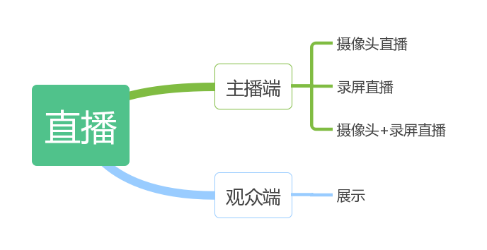
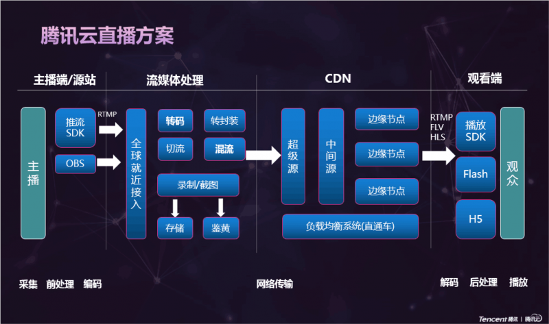
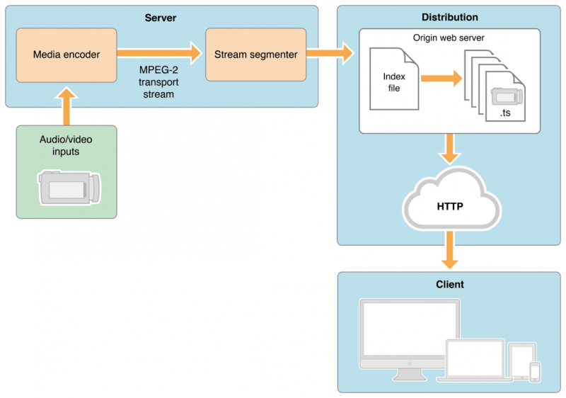
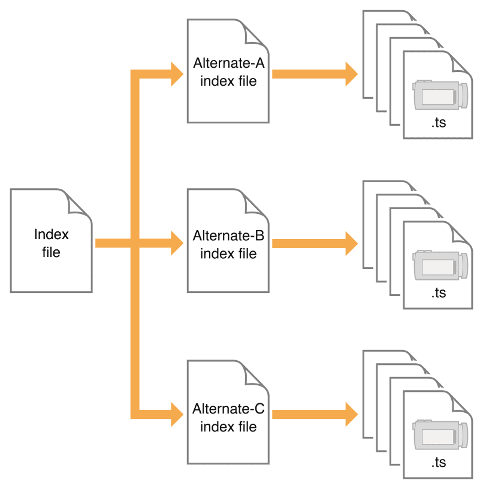
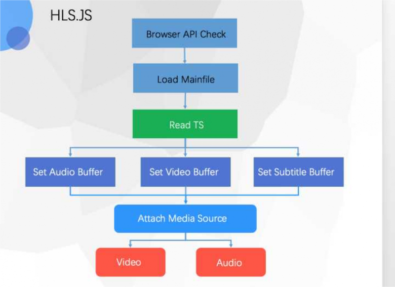
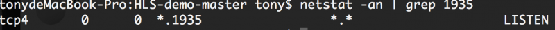
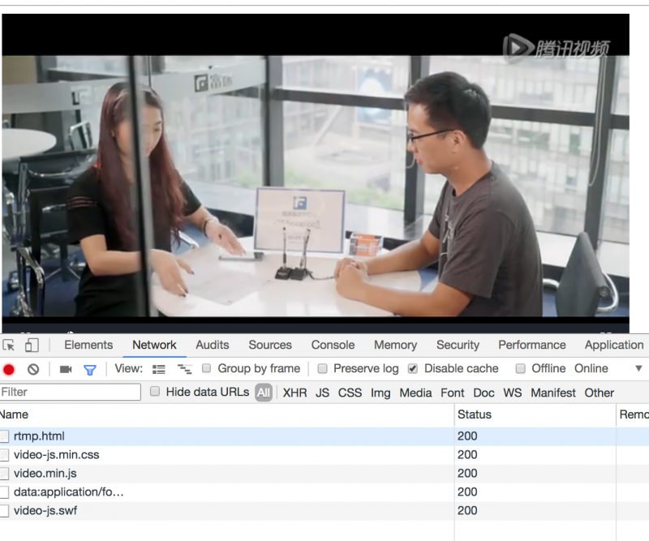
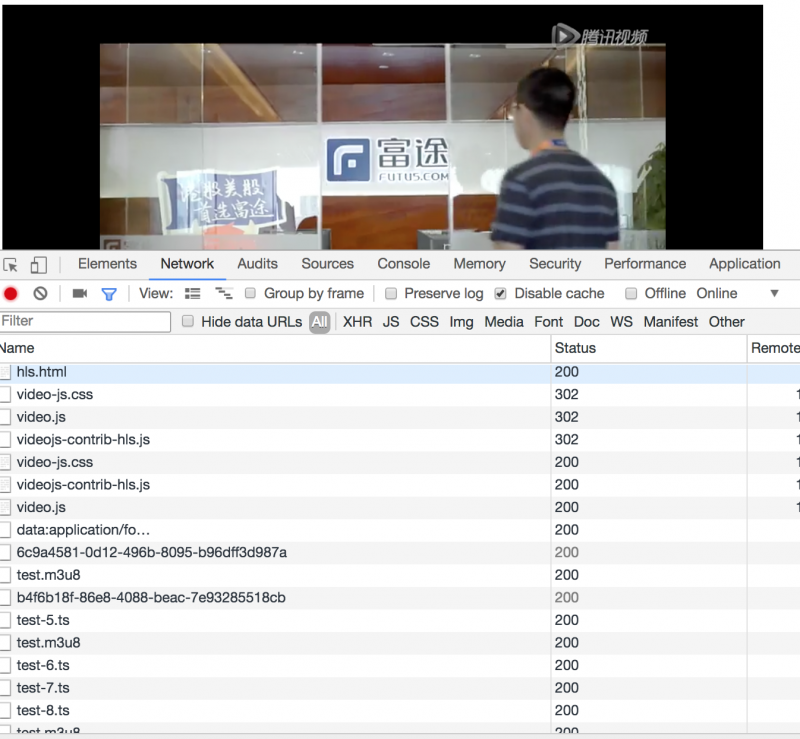
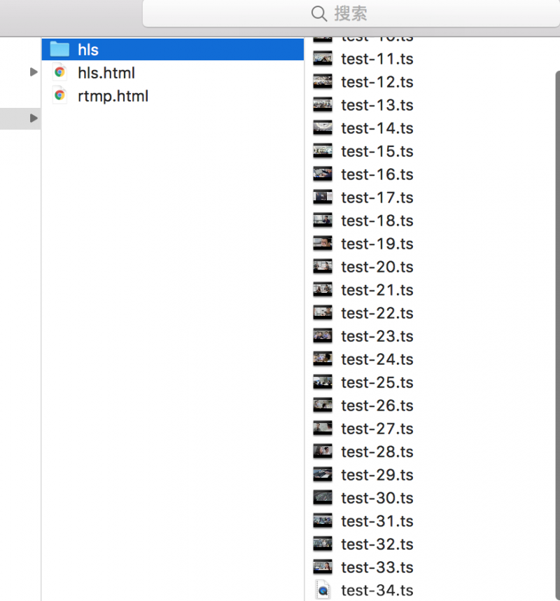

直播原理及实践
前言
直播在互联网中已经成为一个必不可少的东西，作为了一家互联公司直播当然也少不了了，目前直播在牛牛软件中主要功能是教育跟宣传作用。
内容
一、直播构成

目前牛牛支持情况：
- 移动牛牛（安卓、IOS）主播端只支持摄像头直播，观众端支持展示
- PC牛牛主播端支持摄像头直播、录屏直播、摄像头+录屏直播，观众端支持展示
- MAC牛牛跟web端主播端不支持，观众端支持展示
二、直播流程
视频直播，可以分为以下这几个环节
- 采集：一般是由客户端（IOS、安卓、PC或其它工具，如OBS）完成的，iOS是比较简单的，Android则要做些机型适配工作，PC最麻烦各种奇葩摄像头驱动，当然这些问题，腾讯云已经帮我们处理好了，呵呵。
- 前处理：主要是处理直播美颜，美颜算法需要用到GPU编程，需要懂图像处理算法的人，没有好的开源实现，要自己参考论文去研究。难点不在于美颜效果，而在于GPU占用和美颜效果之间找平衡。
- 编码：肯定要采用硬编码，软编码720p完全没希望，勉强能编码也会导致CPU过热烫到摄像头。编码要在分辨率，帧率，码率，GOP等参数设计上找到最佳平衡点。
- 传输：一般交给了CDN服务商。
- 解码：是对之前编码的操作，进行解码，在web里需要解码是hls。
- 渲染：主要用播放器来解决，web中常用到的播放器有video.js，目前我们使用是腾讯云播放器。
其实一个完成直播，远远不上面这几个环节，下面是腾讯云直播方案的整个流程图： 
三、web中直播技术
目前互联网上web做直播，主要是展示，主流web展示的话可能涉及到hls跟rtmp这两个东西，现在我们重点讲解hls跟rtmp协议。
3.1 HLS
HLS（HTTP Live Streaming全称）是一个基于 HTTP 的视频流协议，由 Apple 公司实现，Mac OS 上的 QuickTime、Safari 以及 iOS 上的 Safari 都能很好的支持 HLS，高版本 Android 也增加了对 HLS 的支持。一些常见的客户端如：MPlayerX、VLC 也都支持 HLS 协议，如果需要在chrome上播放，需要使用videojs-contrib-hls.js解析。
HLS工作流程：

Server:服务器组件负责获取的媒体输入流 , 然后Media编码后 MPEG-4（H.264 video 和 AAC audio）格式然后用硬件打包到 MPEG-2 (MPEG-2 transport stream)的传输流中。图中显示,传输流会经过stream segmenter, 这里的工作是MPEG-2传输流会被分散为小片段然后保存为一个或多个系列的 .ts 格式的媒体文件。这个过程需要借助编码工具来完成，比如 Apple stream segmenter。 (视频类是.ts文件,纯音频会被编码为一些音频小片段，通常为 ADTS头的AAC、MP3、或者 AC-3格式。) 服务端可以采用硬件编码和软件编码两种形式，其功能都是按照上文描述的规则对现有的媒体文件进行切片并使用索引文件进行管理。而软件切片通常会使用 Apple 公司提供的工具或者第三方的集成工具。Distribution:同时上面提到的那个切片器（segmenter）也会创建一个索引文件，通常会包含这些媒体文件的一个列表，也能包含元数据。他一般都是一个.M38U 个hi的列表。列表元素会关联一个 URL 用于客户端访问。然后按序去请求这些 URL。client:分配组件由标准的网络服务器。他们负责接受Client客户端请求并提供相关联的资源给客户端。
索引文件结构图

主索引文件
#EXTM3U
#EXT-X-STREAM-INF:PROGRAM-ID=1,BANDWIDTH=409037,RESOLUTION=416x234,CODECS="mp4a.40.2, avc1.42001e"
Gear1/prog_index.m3u8
2
3
\#EXTM3U：每个M3U文件第一行必须是这个tag，请标示作用
\#EXT-X-STREAM-INF：标签的属性列表中直接指明当前流是VIDEO还是AUDIO
属性 :
- BANDWIDTH 指定码率
- PROGRAM-ID 唯一ID (这个属性在后面的协议版本废除了)
- CODECS 指定流的编码类型
- RESOLUTION：分辨率
子索引：
#EXTM3U
#EXT-X-TARGETDURATION:11
#EXT-X-VERSION:3
#EXT-X-MEDIA-SEQUENCE:0
#EXT-X-PLAYLIST-TYPE:VOD
#EXTINF:10.133333,
fileSequence0.ts
#EXTINF:10.000666,
fileSequence1.ts
#EXTINF:10.667334,
fileSequence2.ts
#EXTINF:9.686001,
fileSequence3.ts
#EXTINF:9.768665,
fileSequence4.ts
#EXTINF:10.000000,
fileSequence5.ts
#EXT-X-ENDLIST
2
3
4
5
6
7
8
9
10
11
12
13
14
15
16
17
18
\#EXTM3U：m3u文件头，必须放在第一行\#EXT-X-TARGETDURATION：每个分片TS的最大的时长\#EXT-X-VERSION：用以标示协议版本\#EXT-X-MEDIA-SEQUENCE：TS分片的序列号\#EXT-X-PLAYLIST-TYPE：提供关于PlayList的可变性的信息， 这个对整个PlayList文件有效，是可选的\#EXTINF：extra info，分片TS的信息，如时长，带宽等
说明
- 主索引文件和子索引文件都是.M3U8的playlist
- 主索引文件只需下载一次，但对于直播节目子索引文件定期重新加载
videojs-contrib-hls解析过程 
HLS简单讲就是把整个流分成一个个小的，基于HTTP的文件来下载，每次只下载一些，前面提到了用于 H5播放直播视频时引入的一个.m3u8的文件，这个文件就是基于HLS协议，存放视频流元数据的文件。 每一个.m3u8文件，分别对应若干个ts文件，这些ts文件才是真正存放视频的数据，m3u8 文件只是存放了一些ts文件的配置信息和相关路径，当视频播放时，.m3u8是动态改变的，再通过解析器（videojs-contrib-hls.js）解析这个文件，并找到对应的ts文件来播放，所以一般为了加快速度，.m3u8放在web服务器上，ts文件放在cdn上。
3.2 RTMP
Real Time Messaging Protocol（简称 RTMP）是 Macromedia 开发的一套视频直播协议，现在属于 Adobe。这套方案需要搭建专门的 RTMP 流媒体服务如 Adobe Media Server，并且在浏览器中只能使用 Flash 实现播放器。它的实时性非常好，延迟很小，但无法支持移动端 WEB 播放是它的硬伤。
浏览器端，HTML5 video标签无法播放 RTMP 协议的视频，可以通过 video.js 来实现。
<link href="http://vjs.zencdn.net/5.8.8/video-js.css" rel="stylesheet">
<video id="example_video_1" class="video-js vjs-default-skin" controls preload="auto" width="640" height="264" loop="loop" webkit-playsinline>
<source src="rtmp://10.14.221.17:1935/rtmplive/home" type='rtmp/flv'>
</video>
<script src="http://vjs.zencdn.net/5.8.8/video.js"></script>
<script>
videojs.options.flash.swf = 'video.swf';
videojs('example_video_1').ready(function() {
this.play();
});
</script>
2
3
4
5
6
7
8
9
10
11
12
13
3.3 HLS与RTMP对应
| 协议 | 原理 | 延时 | 优点 | 缺点 | 使用场景 |
|---|---|---|---|---|---|
| HLS(http) | 集合一段时间数据生成ts切片文件更m3u8文件 | 10s-30s | 跨平台 | 延时性高 | 移动端 |
| RTMP(TCP) | 每个时刻的数据收到后立即发送 | 2s | 延时低、实时性好 | 跨平台差 | PC+直播+实时性要求高+互动性强 |
四、实践（搭建RTMP、HLS直播流服务）
4.1 安装nginx
brew install nginx
4.2 安装nginx-rtmp-module
brew install nginx-full --with-rtmp-module
安装FFmpeg（是一个集录制、转换、音/视频编码解码功能 为一体的完整的开源工具，我们下面用它来做推流跟切片）
brew install ffmpeg
4.3 nginx.conf配置文件，配置RTMP、HLS
查找到nginx.conf配置文件（/usr/local/etc/nginx/nginx.conf）
rtmp {
server {
#监听的端口
listen 1935;
# RTMP 直播流配置
application rtmplive {
live on;
#为 rtmp 引擎设置最大连接数。默认为 off
max_connections 1024;
}
# HLS 直播流配置
application hls{
live on;
hls on;
hls_path /Users/tony/Documents/notes/live/public/hls; #这里的路径切片需要保存的路径
hls_fragment 1s;
}
}
}
2
3
4
5
6
7
8
9
10
11
12
13
14
15
16
17
18
19
在http中添加hls的配置
location /hls {
# Serve HLS fragments
types {
application/vnd.apple.mpegurl m3u8;
video/mp2t ts;
}
root /Users/tony/Documents/notes/live/public;#切片的路径
#add_header Cache-Controll no-cache;
expires -1;
}
2
3
4
5
6
7
8
9
10
11
4.4 重启nginx
sudo nginx -s reload
4.5 查看端口是否启动
netstat -an | grep 1935
如果显示如下，显示已经启用

http端口同理
到现在我们已经完成了，服务的搭建（rtmp、hls推流地址分别为:rtmp://127.0.0.1:1935/rtmplive/home,rtmp://localhost:1935/rtmplive/hls）
4.6 FFmpeg执行命令
我们以推流MP4文件为例，我的视频文件地址：/Users/tony/Desktop/w01661pl9vw.p702.1.mp4
RTMP协议推流命令
ffmpeg -re -i /Users/tony/Desktop/w01661pl9vw.p702.1.mp4 -vcodec libx264 -acodec aac -f flv rtmp://127.0.0.1:1935/rtmplive/home
HLS协议推流命令
ffmpeg -re -i /Users/tony/Desktop/w01661pl9vw.p702.1.mp4 -vcodec libx264 -vprofile baseline -acodec aac -ar 44100 -strict -2 -ac 1 -f flv -q 10 rtmp://127.0.0.1:1935/hls/test
/Users/tony/Desktop/w01661pl9vw.p702.1.mp4 表示视频的地址
rtmp://127.0.0.1:1935/rtmplive/home、rtmp://localhost:1935/rtmplive/hls表示推流地址
上面的命令操作后，命令行出现了如下图，表示已经成功了
<img width="793" alt="wx20180126-111328 2x" src="https://user-images.githubusercontent.com/6395813/49803352-81cfe600-fd8a-11e8-8dee-41f4f0e2d008.png">
2
关于FFmpeg功能命令可参考：
4.7 代码实现
两种推流方式播放的话，我们都使用video.js播放器播放(牛牛里使用的是腾讯云播放器)
- RTMP
<!DOCTYPE html>
<html>
<head>
<meta charset="UTF-8">
<title>Insert title here</title>
<link href="http://vjs.zencdn.net/5.19/video-js.min.css" rel="stylesheet">
<script src="http://vjs.zencdn.net/5.19/video.min.js"></script>
</head>
<body>
<video
id="my-player"
class="video-js"
controls
preload="auto"
data-setup='{}'>
<source src='rtmp://127.0.0.1/rtmplive/home' type='rtmp/flv'/>
</p>
</video>
<script type="text/javascript">
var player = videojs('my-player');
var options = {};
var player = videojs('my-player', options, function onPlayerReady() {
videojs.log('Your player is ready!');
// In this context, `this` is the player that was created by Video.js.
this.play();
// How about an event listener?
this.on('ended', function() {
videojs.log('Awww...over so soon?!');
});
});
</script>
</body>
</html>
2
3
4
5
6
7
8
9
10
11
12
13
14
15
16
17
18
19
20
21
22
23
24
25
26
27
28
29
30
31
32
33
34
35
36
其它src中的地址填的是RTMP推流地址，注意播放时，如果出现“当前系统环境不支持播放该视频格式”，浏览器需要启用flash，才能正常播放。
- HLS
<!DOCTYPE html>
<html>
<head>
<meta charset=utf-8 />
<title>videojs-contrib-hls embed</title>
<link href="https://unpkg.com/video.js/dist/video-js.css" rel="stylesheet">
<script src="https://unpkg.com/video.js/dist/video.js"></script>
<script src="https://unpkg.com/videojs-contrib-hls/dist/videojs-contrib-hls.js"></script>
</head>
<body>
<video id="my_video_1" class="video-js vjs-default-skin" controls preload="auto" width="640" height="268"
data-setup='{}'>
<source src="http://www.tony.com/hls/test.m3u8" type="application/x-mpegURL">
</video>
<script>
</script>
</body>
</html>
2
3
4
5
6
7
8
9
10
11
12
13
14
15
16
17
18
19
20
21
4.8 效果
- rtmp效果

- hls效果

- ts和m3u8文件

五、直播中遇到问题
5.1 自动播放问题
在X5内核浏览器里必须使用触发touchend、click、doubleclick或keydown事件等标准的事件才能触发
5.2 各平台播放器表现不统一
安卓下很多浏览器把video标签替换成了原生自带播放器样式跟行为，很难控制其行为跟样式。
5.3 内嵌页面调试困难
目前使用的是weinre调试，但weinre调试看不到在native实际效果，比如web调用native，需要native反馈一种效果，weinre是看不到效果。
5.4 Native与web通信
schema跟jsBridge，schema只能做到web调用native，而且做不到native调用web；jsBridge虽然可以做native调用web，但在iframe没加载完的情况下，也是通知不到web的；
六、总结
整个直播是一个非常复杂的过程，实现过程中会遇到很多性能问题，需要在性能跟即时性做一个权衡，ts跟m3u8尽量做到缓存，浏览器里尽量使用推流。
参考资料
联系作者
平凡世界，贵在坚持。